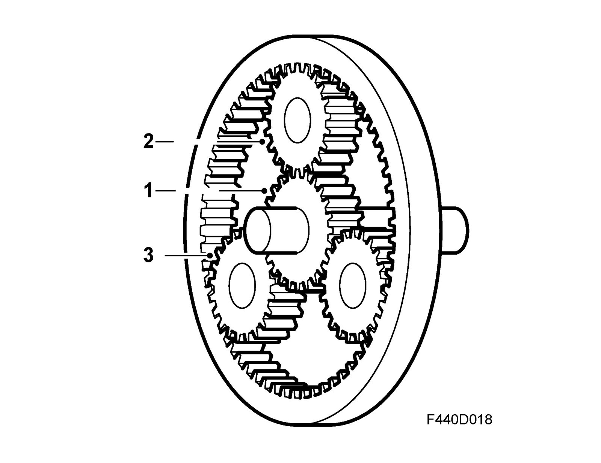
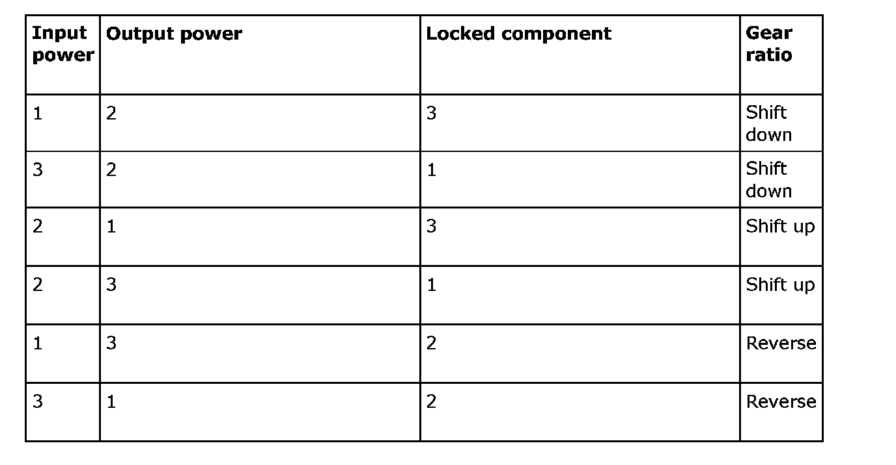
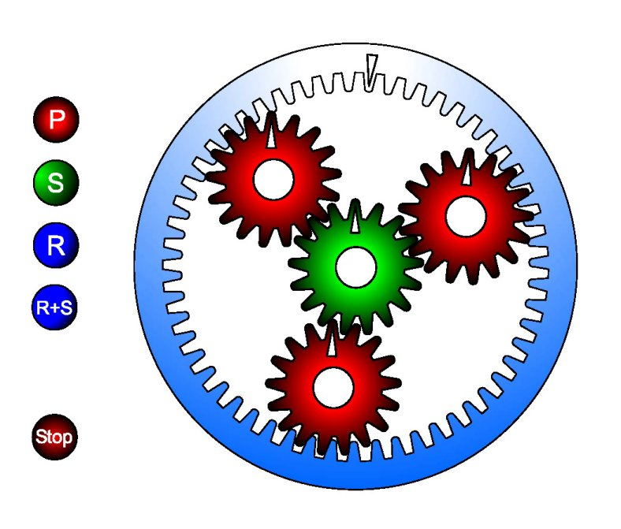

Planetary Gear, Animation
Planetary gear, animationFunction
To obtain the different gear ratios, the component parts of the planetary gears, such as the sun wheel, planet wheel, ring wheel and planet carrier are locked or released respectively. The friction elements for this are all disc type except for brake B4 which is band type. As there are four different planetary gears, it is possible to obtain a wide range of different ratios.

Planetary gear
1 = S = Sun gear
2 = P = Planet gear
3 = R = Ring gear

Animation
Press "P" to brake the planet carrier, "S" to brake the sun gear and "R" the ring gear. "S+P" will stop the sun gear and the planet gear. Observe the power flow. Pay attention to the direction of rotation with the help of the markings.
